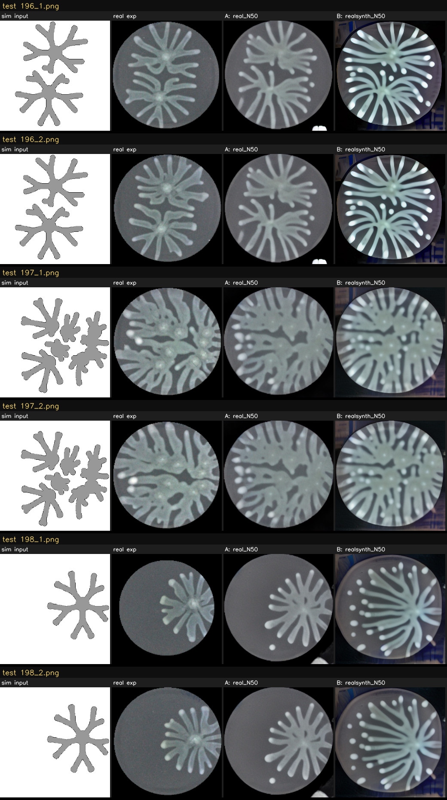

Held-out real Exp_testset. SSIM higher = better; LPIPS lower = better. B−A: SSIM -0.1966, LPIPS +0.1123 (LPIPS negative = synthetic helped).
| condition | SSIM ↑ | LPIPS ↓ | n |
|---|---|---|---|
| A — real_N50 (real-only) | 0.3920975890325382 | 0.3775131388877829 | 96 |
| B — realsynth_N50 (real+synthetic) | 0.1954968727081764 | 0.4898516669248541 | 96 |
